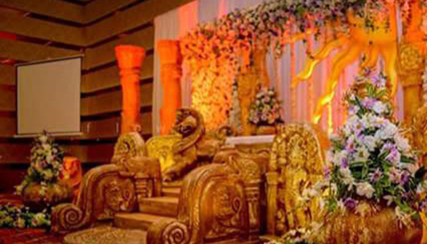
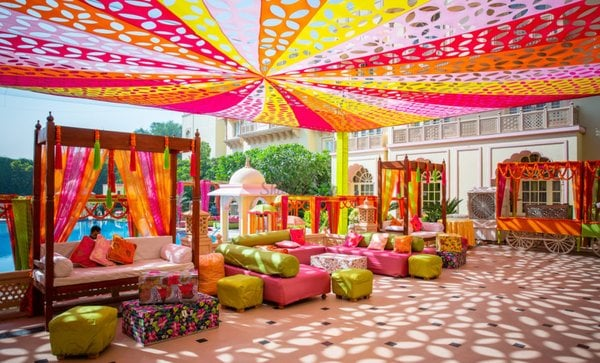

Wedding Planning
Transform your event into an unforgettable experience with our theme-based decoration service. Whether you're hosting a birthday bash, corporate event, or wedding, let us help you decide on the perfect theme to suit your style and vision. From whimsical fairy tales to elegant masquerade balls, we'll curate decorations that seamlessly align with your chosen theme and color scheme, ensuring every detail is meticulously planned and executed. Let your imagination run wild as we bring your dream event to life with our creative flair and attention to detail. Get ready to wow your guests and create lasting memories with our themed decorations.
Traditional Kandian wedding decorations are a vibrant reflection of Sri Lankan culture, characterized by intricate designs and rich colors. The wedding venue is adorned with traditional motifs such as lotus flowers, peacocks, and elephants, symbolizing purity, beauty, and prosperity. Intricately woven fabrics like Kandyan sarees, known as Osariya, are draped around the venue, adding elegance and grace. Oil lamps, known as Kuthu Vilakku, are placed strategically, illuminating the space with a warm, inviting glow. Fresh flowers, especially jasmine and orchids, are used abundantly, infusing the air with their sweet fragrance. Overall, the decorations create a mesmerizing ambiance, transporting guests to a world of timeless beauty and cultural heritage.
Indian themed wedding decorations are a vibrant celebration of culture and tradition, characterized by rich colors, intricate patterns, and opulent embellishments. From stunning mandap designs adorned with marigold flowers to ornate rangoli patterns adorning the entrance, every detail reflects the beauty and grandeur of Indian heritage. Elaborate drapery, sparkling lights, and traditional elements like diyas and elephant motifs create an enchanting ambiance, transporting guests to a realm of timeless elegance and romance. With a fusion of modern trends and classic charm, Indian theme wedding decorations promise an unforgettable experience that captures the essence of love and celebration.
Flower-themed wedding decorations offer an enchanting ambiance, transforming venues into botanical wonderlands. Delicate petals cascade from elegant centerpieces, while floral arches frame romantic vows. Tables adorned with vibrant blooms evoke a sense of natural splendor, while bouquets and boutonnieres accentuate the bridal party's attire. Whether it's roses symbolizing love or lilies representing purity, each flower adds a unique touch, infusing the celebration with color, fragrance, and timeless beauty.

Sea-themed wedding decorations immerse guests in an oceanic paradise, where the romance of the sea meets the joy of celebration. Draped in hues of blue and adorned with shells, driftwood, and nautical accents, the venue becomes a coastal haven. Tables adorned with seashell centerpieces and starfish accents evoke the tranquil rhythm of waves, while mermaid-inspired elements add whimsy and charm. Guests are transported to sandy shores as they dine amidst seafaring treasures, and the bride and groom exchange vows beneath a rustic driftwood arch adorned with billowing fabric and cascading sea grass. With every detail reminiscent of the ocean's allure, the sea-themed wedding creates a captivating atmosphere where love and adventure intertwine.